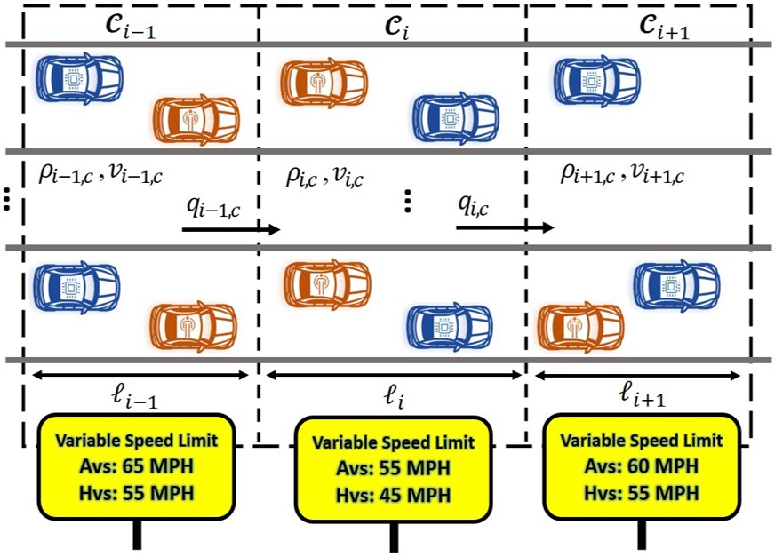

About Me
Welcome to my personal academic website. I am a Ph.D. candidate in Mechanical Engineering with research interests in dynamics, nonlinear control, model predictive control, and autonomous systems.
Research Interests
- Nonlinear Control
- Model Predictive Control
- Robust and Constrained Control
- Autonomous Systems
- Intelligent Transportation Systems
Publications
Journal
- Arash Rahmanidehkordi, Amir H. Ghasemi, “Traffic density control for heterogeneous highway systems with input constraints, ” IEEE Control Systems Letters, vol. 8, pp. 2787–2792, 2024. DOI: 10.1109/LCSYS.2024.3516073
- Arash Rahmanidehkordi, Amirhossein Ghasemi, “Filtered dynamic inversion for input constrained uncertain linear systems with unknown and unmeasured disturbances,” International Journal of Dynamics and Control, vol. 14, no. 8, p. 286, 2026. DOI: 10.1007/s40435-026-02224-9
- Pouria Karimi Shahri, Arash Rahmanidehkordi, Azad Ghaffari, Amir H. Ghasemi, “Enhancing traffic flow in heterogeneous freeways: Integration of multivariable extremum seeking and filtered feedback linearization control,” IEEE Access, vol. 13, pp. 129 573–129 587, 2025. DOI: 10.1109/ACCESS.2025.3585431
- Pouria Karimi Shahri, Arash Rahmanidehkordi, Azad Ghaffari, Amir H. Ghasemi, “Control of heterogeneous freeways using newton-based extremum seeking and filtered feedback linearization,” ASME Letters in Dynamic Systems and Control, 2026 (Accepted).
Conference
- Arash Rahmanidehkordi, Amirhossein Ghasemi, “Enhancing traffic flow via feedback linearization and model predictive control under input constraints,” IFAC-PapersOnLine, vol. 58, no. 28, pp. 372–377, 2024. DOI: 10.1016/j.ifacol.2025.01.064
- Arash Rahmanidehkordi, Amirhossein Ghasemi, “Traffic density control via filtered feedback linearization in homogeneous highway corridors with input constraints,” 2026 American Control Conference (ACC), 2026, pp. 4125–4131.
Reviewer
- International Journal of Dynamics and Control, Springer Scientific Reports, Nature, Springer IEEE Control Systems Letters (L-CSS_
Projects & Experience

Traffic Density Control
Development of nonlinear control methods for traffic density management in heterogeneous freeway networks.

Nonlinear Control
Development of constrained nonlinear control architectures using feedback linearization and model predictive control.

Autonomous Systems
Research involving estimation, sensor fusion, control, and decision making for autonomous systems.
Contact
Email: arahmani@charlotte.edu